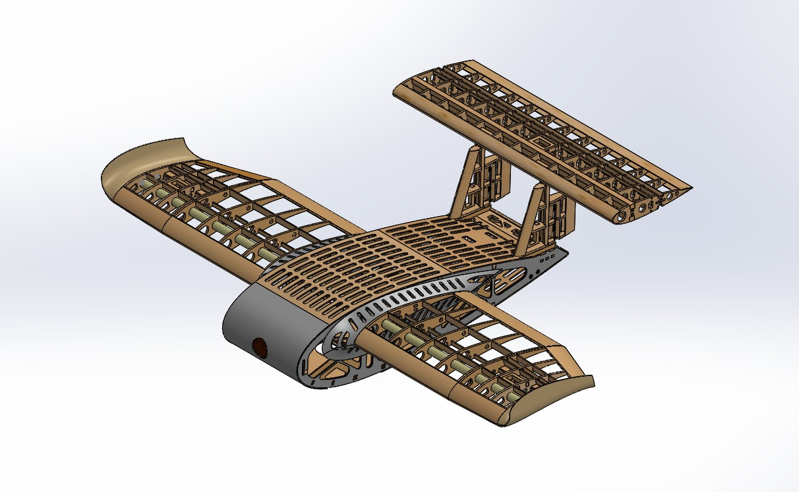
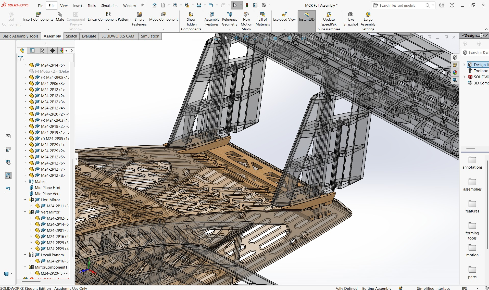
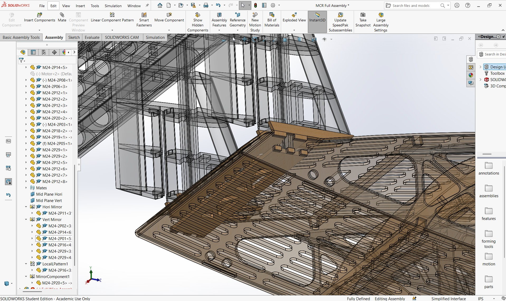
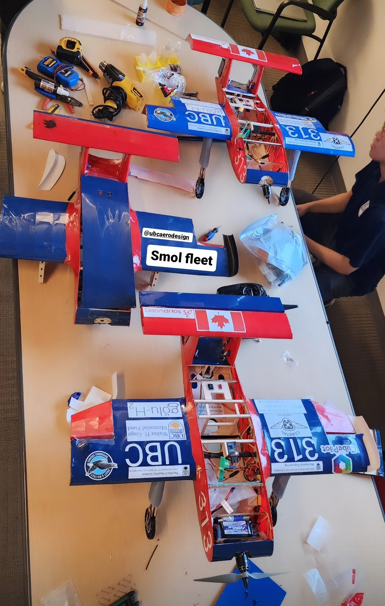
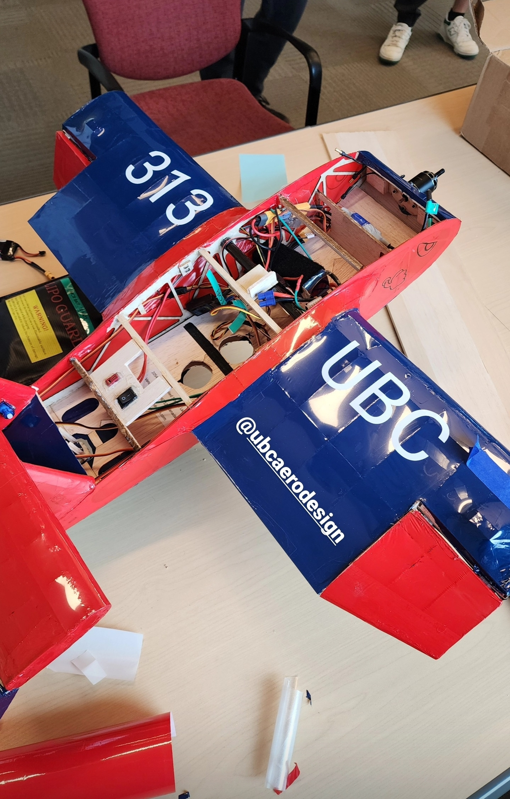

2023/2024 MCR Class Plane
Mechanical Design & Testing
.jpg)
Overview
As a member of the UBC AeroDesign Micro Class team, I contributed to the design, analysis, and manufacturing of Romeo, a blended wing body aircraft with an inverted U-tail configuration for the 2023–2024 SAE Aero Design competition in California. My primary responsibility was the design and structural development of the tail assembly, where I balanced aerodynamic stability, structural integrity, and strict weight requirements to produce a lightweight yet robust design. To support the design process, I developed an automated engineering spreadsheet based on the aircraft design methods outlined in General Aviation Aircraft Design by Snorri Guðmundsson. The tool implemented stability volume coefficient equations and geometric relationships to automatically calculate tail arm length, horizontal and vertical stabilizer sizing, aspect ratios, spans, surface areas, and average chord lengths from a set of aircraft design inputs. Automating these calculations significantly reduced design iteration time, improved consistency, and enabled rapid evaluation of multiple design configurations before CAD modeling. Using the calculated design parameters, I created detailed SOLIDWORKS models of the inverted U-tail and performed finite element analyses using predicted aerodynamic loading conditions to validate structural performance. The design was iteratively refined to minimize weight while maintaining sufficient stiffness and strength for flight. I then manufactured the components using laser-cut balsa wood and assembled multiple prototype and competition aircraft,
Key Deliverables
- Developed an automated Excel design tool implementing Snorri Guðmundsson's aircraft design methodology to size horizontal and vertical stabilizers.
- Designed the inverted U-tail assembly for a blended wing body Micro Class aircraft using SOLIDWORKS.
- Performed finite element analysis using predicted aerodynamic loading to validate structural integrity and optimize weight.
- Manufactured using laser-cut balsa wood components and assembled multiple prototype and competition aircraft.
Role
Mechanical Engineer
Tools
SolidWorks, MATLAB, ANSYS
Technical Documentation & Gallery





.JPG)
.JPG)
.JPG)
.JPG)
.JPG)
.JPG)
.JPG)
.jpg)